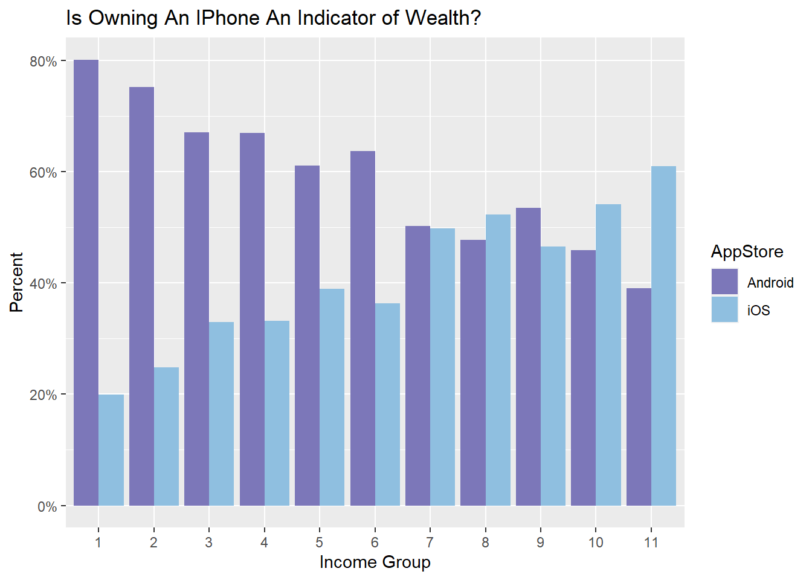
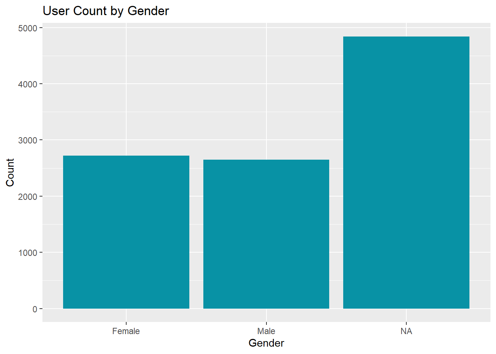
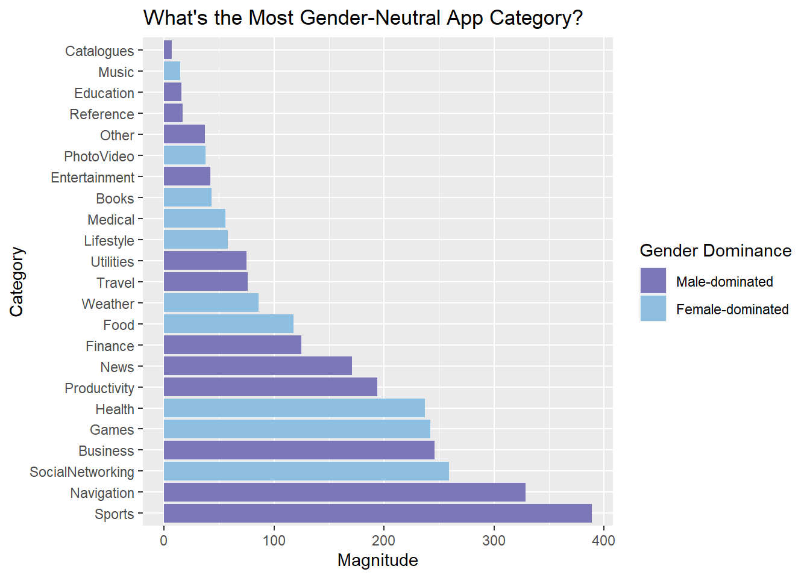

Chapter 4 Missing values
In this section, we will look at the patterns in missing data. We expect to have many missing values in this Mobile App User Dataset as the data are collected from a survey where respondents may skip questions that they prefer not to answer.
# import data
app_data = read_excel("data/mobile_app_user_dataset_1.xlsx")# choose columns we need for the project
app_user = app_data[-1,] %>%
select(ID, Q4, Q9_8, Q16, Q17, Q19, Q23, Q24, Q27) %>%
rename(AppStore = Q4,
PriceSensitive = Q9_8,
Gender = Q16,
Age = Q17,
Nationality = Q19,
Education = Q23,
YearsEdu = Q24,
Occupation = Q27)4.1 Column pattern
# Missing values by column sum
colSums(is.na(app_user[,-1])) %>% sort(decreasing = TRUE)## PriceSensitive Education YearsEdu Occupation Gender
## 7104 4892 4892 4892 4842
## Age Nationality AppStore
## 4842 4842 2310Here, we define PriceSensitive as people who took price into consideration when choosing apps to download (those who chose Price in Q9). On the other hand, NAs in this column represent people who skipped the question or those who didn’t choose Price for the question. In addition to 7,104 missing values in PriceSensitive, 4,892 people didn’t reply to education, years of education and occupation, while 4,842 values are missing for gender, age and nationalities. It also shows that 2,310 people skipped the question of “which app store do you use?” in the survey.
4.2 Value patterns
4.2.1 Missing values by app store
# rename the levels
app_user = app_user %>%
mutate(AppStore = fct_recode(AppStore,
iOS = "1",
Blackberry = "2",
Android = "3",
Nokia = "4",
Samsung = "5",
Windows = "6",
None = "7",
`Not sure` = "8",
Other = "9",
`Do not use apps` = "10"
)) %>%
mutate(AppStore = as.factor(AppStore))
# missing values by app store
missing_appstore = app_user %>%
group_by(AppStore) %>%
summarise_all(~sum(is.na(.))) %>%
select(-ID, -PriceSensitive)
missing_appstore## # A tibble: 11 x 7
## AppStore Gender Age Nationality Education YearsEdu Occupation
## <fct> <int> <int> <int> <int> <int> <int>
## 1 iOS 106 106 106 113 113 113
## 2 Do not use apps 24 24 24 24 24 24
## 3 Blackberry 28 28 28 35 35 35
## 4 Android 167 167 167 181 181 181
## 5 Nokia 102 102 102 105 105 105
## 6 Samsung 76 76 76 80 80 80
## 7 Windows 23 23 23 23 23 23
## 8 None 1595 1595 1595 1595 1595 1595
## 9 Not sure 390 390 390 403 403 403
## 10 Other 21 21 21 23 23 23
## 11 <NA> 2310 2310 2310 2310 2310 2310When we group the data by different App stores, some missing data appear to be highly correlated: Gender, Age and Nationality share the same patterns of missing values, while Education, YearsEdu and Occupation have exact same numbers of NAs in each App store. This shows that respondents who didn’t answer education-related questions also skipped the one for occupation. People who prefer not to answer their genders and ages avoided answering nationalities too.
# bar plot for edu
ggplot(missing_appstore, aes(x = fct_reorder(AppStore, Education), y = Education, fill = AppStore)) +
geom_col() +
ggtitle("Number of missing values by app store") +
xlab("App store") +
ylab("Number of NAs in education (out of 10,208)") +
coord_flip() +
theme_classic() +
theme(legend.position = "none") 
If we visualize missing values of Education by App store, we can see that the largest number of NAs in education appears in the group NA in App store. We should consider removing these NAs since they have little information for both variables.
4.2.2 Missing values by app store & price sensitivity
## # A tibble: 11 x 4
## AppStore num_appstore num_na pct_na
## <fct> <int> <int> <dbl>
## 1 <NA> 2310 2310 1
## 2 None 1653 1633 0.99
## 3 Do not use apps 76 67 0.88
## 4 Not sure 737 608 0.82
## 5 Nokia 830 438 0.53
## 6 Other 150 78 0.52
## 7 Samsung 722 357 0.49
## 8 Android 2066 990 0.48
## 9 Windows 162 72 0.44
## 10 iOS 1169 428 0.37
## 11 Blackberry 333 123 0.37# visualization of the above
ggplot(app_store, aes(pct_na, reorder(AppStore, pct_na, mean))) +
geom_point() +
ylab("App store") +
xlab("Percent of NA in PriceSensitive")
All people who skipped writing down their App stores have an NA in PriceSensitive. People using iOS (Apple Store) appear to have the smallest number of missing values for the price question, so they are the most price-sensitive. We can also see that Android/Google and Samsung market users have similar percentages of NAs.
4.3 Missing values by variable
# plot
plot_missing_pattern(dataset = app_user, percent = FALSE)
The most obvious pattern is the complete case (no NA in any column), indicating that over 2,500 observations contain all the information we need. The second most frequent missing pattern appears in the PriceSensitive column. It is interesting that many people didn’t provide any of their personal information in the survey, as we can see from the third, fourth & fifth patterns.